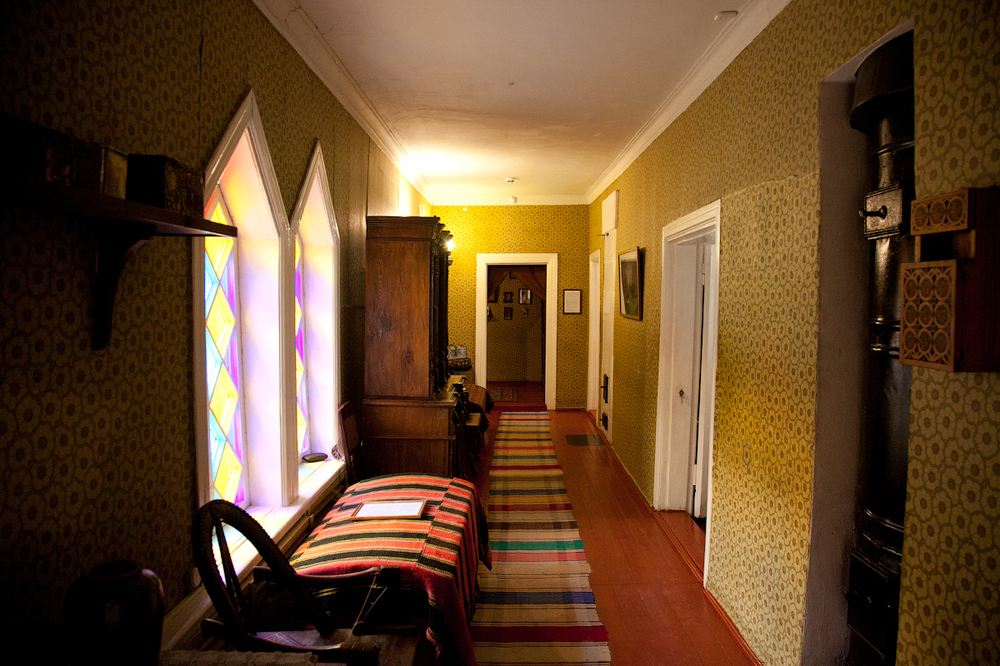

О своем будущем имении Антон Павлович Чехов узнал из газеты «Курьер», увидев объявление о его продаже, и уже спустя месяц вознамерился его приобрести. После появления планов о столь грандиозном приобретении имения в двести душ писатель называл его «порося», то есть поросенком, намекая на его большие размеры: «…купила баба порося! Купили и мы порося — большое, громоздкое имение…Фруктовый сад. Парк. Большие деревья, длинные липовые аллеи». 22 февраля 1892 года куплено имение Мелихово.
В первый раз посетив свою усадьбу в марте того же года, писатель нашел ее в довольно унылом и запущенном состоянии. Она больше походила на исхудавшую козу, чем на откормленного поросенка. Хозяйство не приносило дохода, крестьяне страдали не только от бедности, но и от эпидемий холеры, характерных этим местам. И тогда новый хозяин активно занялся благоустройством имения Мелихово, не только руководя процессом, но и старательно участвуя в нем.
Такой энтузиазм принес большие плоды; был выкопан пруд, посажен сад и огород. После совместного труда всей семьи вышла довольно красивая, аккуратная и немного скромная усадьба, где он проживет около 7 лет. Время его пребывания в этом доме станет одной из важнейших эпох в его биографии и творчестве. Вероятно, он тогда и не догадывался, что спустя 50 лет тут будет гордо стоять памятник не только талантливому писателю, но и прекрасному, добрейшему человеку.
«Дом и хорош, и плох. Он просторнее московской квартиры, светел, тепел, крыт железом, стоит на хорошем месте, имеет террасу в сад, итальянские окна и прочее, но плох он тем, что недостаточно высок, недостаточно молод, имеет снаружи весьма глупый и наивный вид, а внутри переизбыточествует клопами и тараканами, которых можно вывести только одним способом – пожаром; все же остальное не берет их»
Небольшая по размерам усадьба таит в себе большую загадку. Интерьер запутывает и завораживает огромным количеством маленьких комнат и длиннющим коридором. Известно, что хозяин любил водить гостей по дому кругами, выдавая пройденные комнаты за новые, а посетители охотно следовали ему, не замечая, что их водят за нос. А по внешнему виду усадьбы и не скажешь, что в ней можно заблудиться.

«У меня по целым дням играют и поют романсы в гостиной, и поэтому я постоянно пребываю в элегическом настроении», «В доме поют красивый романс, а в открытые окна слышатся крики птиц и доносится действительно одурманивающий запах цветов». Как видно, запахи, звуки и музыка, слышимая из гостиной не только не отвлекали писателя от работы, но и вдохновлял. Игра на фортепьяно сопровождалась пением, танцами, аккомпанементом в виде игры на скрипке. На круглом столике лежит коробочка с лото. Игра в лото была одним из любимейших увлечений семьи, особенно во время холодных дождливых осенних вечеров.
Кабинет украшен тремя итальянскими окнами, коллекцией портретов на стене, среди них – изображения Толстого и Тургенева, которых он ставил превыше остальных русских писателей. На столе находятся его личные вещи, записные и настольные книги, письма, визитная карточка, каталог учебных заведений, инструменты, коробочка с почтовыми марками с самых разных стран, его личный дневник,», где он записывал свои эмоции, замыслы и заметки, например, кто сегодня гостил в Мелихове, что было приготовлено на обед, портрет любимого композитора Чайковского
Из вещей его личного кабинета мы также узнаем, что этот писатель был активным земским деятелем. Папка с переписью говорит о том, что он сам принимал в проведении первой переписи населения участие. Об его земской деятельности напоминает блюдо на шкафчике, на котором написано: «Чай пить – хозяйку любить». На нем крестьяне встретили хозяина с хлебом-солью на мероприятии в честь открытия земской школы.
Самая просторная, самая светлая, самая розово-гламурная комната принадлежала сестре писателя – Марии Павловне. Она работала учителем истории и географии в частной гимназии, а в Мелихово приезжала на выходные, помогала брату заниматься хозяйством.На стене расположена коллекция ее портретов и пейзажей. В центре – портрет молодого брата. На столе вы увидите фотографии родителей – Павла Егоровича и Евгении Яковлевны, а также кисти для рисования.
Как только ударяют 12 раз в колокол, гости и семья собираются в столовой, где поданы разные горячие блюда и закуски. Сейчас стол накрыт на 5 человек: отца и мать, сестру, брата Михаила и нашего писателя, который всегда выбирал место поближе к двери. Как думаете, почему? Нередко прием пищи приносил писателю вдохновение, и он мог посреди обеда или ужина встать изо стола чтобы отразить на бумаге идею, внезапно пришедшую во время еды.
Ни одно русское имение не было так известно своим гостеприимством, как Мелихово. Сюда приезжали гости со всех городов и деревень. И тогда одного помещичьего дома стало недостаточно, поэтому в 1894 году посередине сада был построен флигель для приема гостей хозяина, ведь он сам «был гостеприимен, как магнат» - писал о нем Чуковский.
Его гости были доктора, поклонники и поклонницы, охотники и художники, среди которых Исаак Левитан. С последним связана история, исходя из которой флигель получит свое название. «Одним красивым влюбленным созданием стало меньше, а два дурака вернулись домой и сели ужинать» - так наш писатель описывает случай с собой и Левитаном на охоте, когда «от нечего делать ими была застрелена не в чем не виновная чайка. В честь убитой птицы спустя 3 года будет не только написано произведение, но и назван флигель.
В этом крошечном домике всего 20 метров жилой площади, но дизайн продуман так, что 2 небольшие комнатки кажутся просторнее. Постоянные приемы гостей стали причиной переселения писателя из усадьбы во флигель. Несмотря на его незначительные размеры и отсутствие свободного пространства, он не раз будет тосковать по этому месту: «Здесь, под чужим небом, за чужим столом, даже мысли появляются чужие. Скорей бы домой, во флигель».
Так как хозяин имения являлся не только знаменитым писателем, но и опытным врачом, имел высшее медицинское образование, то в имении было организовано 2 медпункта, в которых он самостоятельно вылечил около 100 крестьян от эпидемии холеры, настигнувшей внезапно на юг Подмосковья. Сюда также приходили жители 25ти окрестных деревень и рабочие ближайшей фабрики.
Не так давно в одном из флигелей была расположена экспозиция «Амбулатория». Войдя в него, вы окажетесь в настоящем медицинском кабинете конца 19 - начала 20го века. Рядом с амбулаторией вы обнаружите «аптекарский» огород, где растут лечебные травы.
«Если б не литература, то я бы мог стать садовником». Хозяин заботился не только об постройке различных учреждений для сельчан, но и красоте природы и об изобилии этой красоты. Мелихово расположено в живописном месте, окруженном холмами и реками, широкими полями и густыми рощами. Но писатель не довольствовался этими природными богатствами, сооружая новые: «Все свободное от работы и занятий время проводил в саду. Он сам сажал, высеивал, обмазывал яблони чем-то белым, подрезал розы и гордился своим садом».
Смерть отца, а также советы врачей переехать на юг по состоянию здоровья заставили писателя попрощаться с имением Мелихово 25 августа 1899 года, после чего писатель с семьей переехал на Ялту. Усадьба снова запустеет, имение придет в упадок, а в 1920х оно разрушится от ветхости и давлений революции. Однако в 1940м году был учрежден государственный музей-заповедник, а главная усадьба восстановлена и отреставрирована. И до сих пор Мелихово принимает гостей с хлебом-солью, как 100 лет назад.